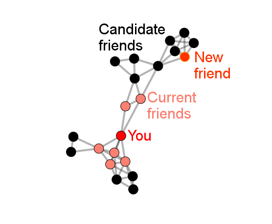

The average American's social network consists of over 600 people whom they interact with on an ongoing basis. People make these social connections for a wide variety of reasons, ranging from strategic "networking" to simply enjoying another person's company. We are interested in learning more about the factors that lead people to make social connections. In the present study, we are studying how the shape of a social network may influence such decisions. Some individual are more "central" to a network than others because they have many friends, have popular friends, are close to everyone or are brokers between different groups. We hope to learn how these various forms of centrality affect people's preferences in making social connections.

In the current study, you will be presented with naturalistic social networks. Each network will consist of a set of simulated people, represented by circles called "nodes." One of the nodes of the network will be red, representing you, the participant. The people in the network - including yourself - will be linked to one another via social connections, represented by lines between nodes. Your task will be to examine the structure of these connections and then make a new friend by adding a social connection between yourself and another person to the network. On each trial, you should try to make the social connection that will be improve your own position within the network, however you define it. At the end of the study, you will receive personalized feedback, including a visualization of the extent to which you relied on various types of network centrality to make your decisions about new social connections. You will also have the opportunity to explore these various forms of centrality in an interactive demo that allows you to edit the shape of a network. If you wish to participate in this study on perceptions of networks, please click the 'begin' button below.